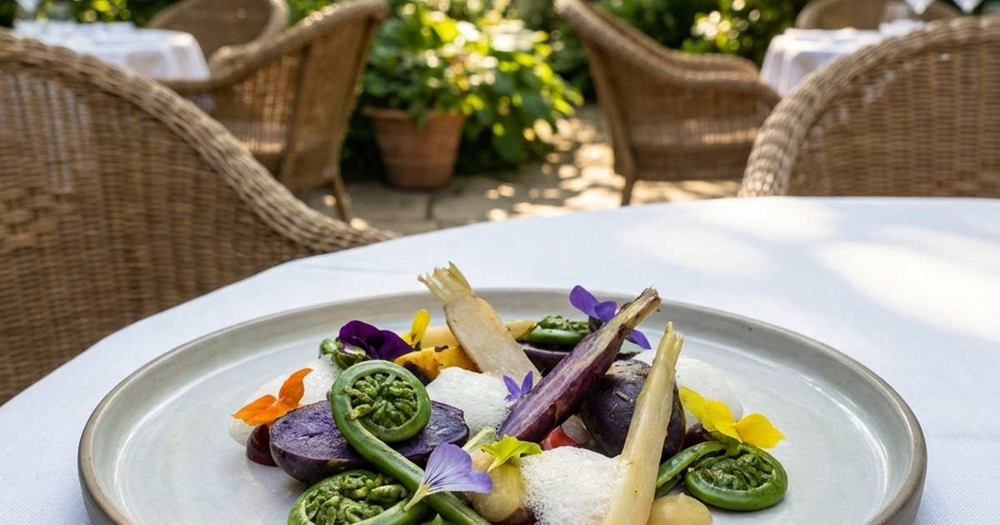
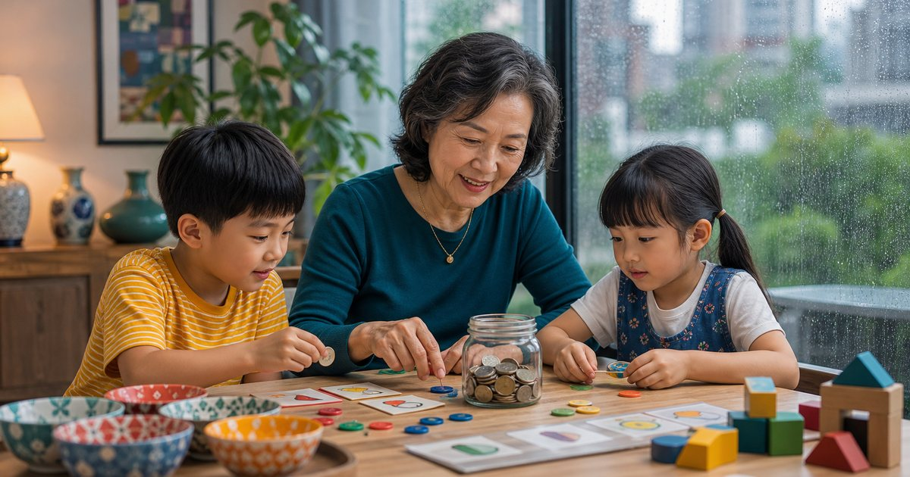
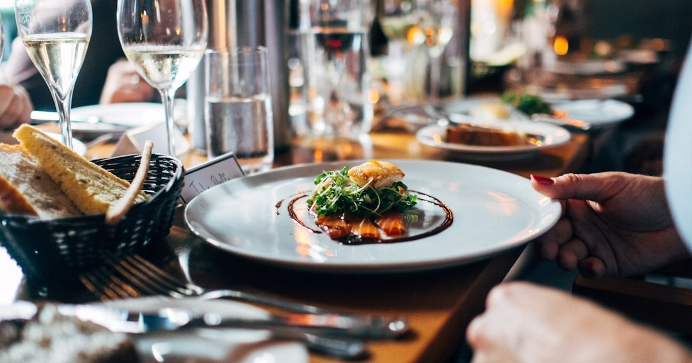
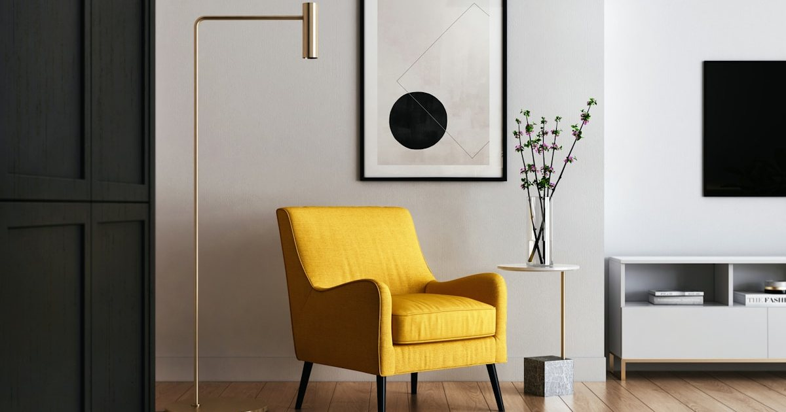
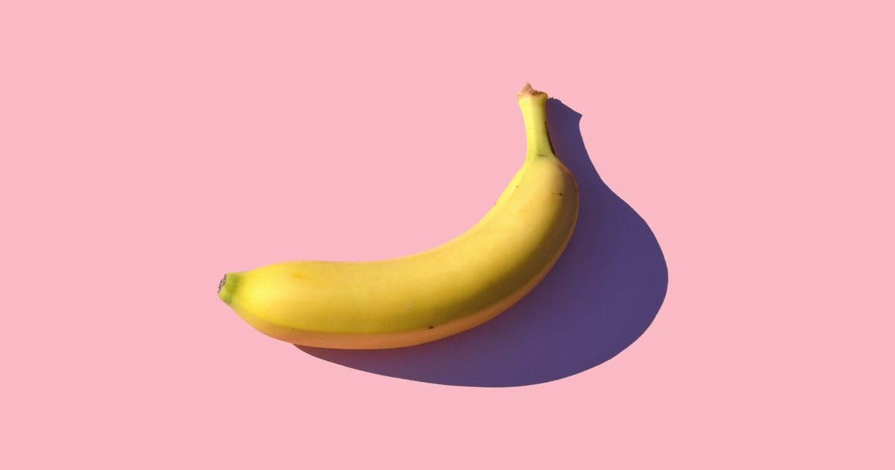
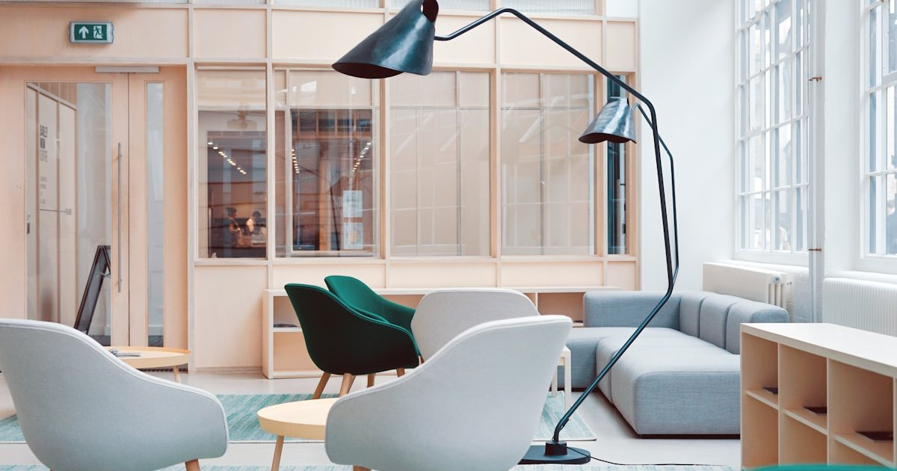

人生重整與一人生活秩序
整理離婚、喪偶、返台、獨居、家庭對話與社交邊界之後，如何把生活重新放回可掌握的日常。
進入主題 →生活品味不只是藝術、美食與旅宿，也包含人生轉折後如何重新安排日常。這裡整理一人生活、 關係邊界、返台重啟、第二曲線與居家秩序，幫 40+ 女性把生活重新放回自己手上。
先從完整策展頁掌握順序，再進入單篇文章。
先從站內最重要的兩個 owner page 開始，減少重複閱讀與選題分散。
從居家、關係、旅行到日常秩序，這裡收錄生活品味分類最新上線的內容。

衣櫃與洗衣區不是收越多越好，先分每天拿、每週洗、換季收，才知道衣架、收納箱、毛巾與床寢要買到哪裡。
閱讀全文 →
清潔工具牆要先分地面、水槽、垃圾與擦拭四類，再決定平板拖把、掃把、刷具與垃圾桶放哪裡。
閱讀全文 →
租屋改造不動工要先看可復原性、插座位置、收納容量與搬家成本，再比較貼皮、燈具與可移動家具。
閱讀全文 →
玄關分工要先看鞋櫃容量、傘具濕物、外出包暫放與清潔工具位置，再比較家具與收納品。
閱讀全文 →
家庭餐桌週末補貨要先看冷凍保存、鍋具容量、餐具數量與茶點時段，再比較品牌。
閱讀全文 →
辦公室點心櫃要先看保存、份量、咖啡因與共享便利性，再分堅果、甜點、茶飲與咖啡。
閱讀全文 →探索精英階層的深度生活哲學與美學趨勢
從日常自拍、家庭互動到個人品牌短影音，好的工具不是讓生活變複雜，而是讓你更願意把值得留下的片刻拍得完整、自然又有質感...
閱讀全文 →當孩子漸漸獨立，妳是否感到一絲迷惘？這不是失去，而是重生的開始。5個生活提案，幫妳找回那些年的夢想與熱情，優雅地做回自己...
閱讀全文 →
普通人將信用卡年費視為支出，富有的人將其視為投資。深入比較頂級卡的點數價值與隱藏福利，最大化你的旅遊回報率...
閱讀全文 →靈感是時尚產業的貨幣。深度比較 Notion 的協作美學與 Obsidian 的知識聯網，打造屬於創意人的數位資產管理系統...
閱讀全文 →
精選 2026 年全球最佳數位遊牧據點。解析具備頂級設施與社群氛圍的城市...
閱讀全文 →
深入解析 2026 年米其林綠星趨勢。揭示精緻餐飲如何實踐極限永續哲學...
閱讀全文 →
解析 2026 家居設計大趨勢：聖域化。打造私人的療癒避風港，重整身心能量...
閱讀全文 →
從紐約MoMA到巴黎龐畢度中心，從倫敦泰特現代到東京森美術館，春季藝術季正式揭幕...
閱讀全文 →
2025米其林指南揭曉，台北再次證明其作為亞洲美食之都的地位。品味獲得星級肯定的餐廳...
閱讀全文 →從日本的溫泉旅館到馬爾地夫的水上villa，這些精品旅宿提供獨特的設計語言體驗...
閱讀全文 →
家是個人品味最直接的展現。了解不同設計風格的特色與元素，打造專屬的理想居所...
閱讀全文 →
精品咖啡不僅是飲品，更一種生活態度。探索第三波咖啡浪潮，品味一杯好咖啡的故事...
閱讀全文 →
在數位時代，實體書依然具有不可取代的魅力。創造一個讓心靈沉進的閱讀天地...
閱讀全文 →為 40+ 熟齡女性量身打造的身心靈成長指南
「人生提案」系列由 Elite Fashion 深度長文小組撰寫，成員包含資深時尚觀察家、心理諮詢師與健康管理專家。我們致力於為 40+ 精英女性提供具備科學實證與人文關懷的生活指引，助妳在多重角色間找回優雅與自我。
從居家秩序、關係邊界與日常選擇重新安排生活。
不只是。這裡也整理關係邊界、一人生活、返台重啟、社交節奏、居家動線與長期生活安排。
先選最影響安全、文件、住居、現金流或日常支持的一篇，再慢慢延伸到社交、工作與自我照顧。
不會。文章提供生活整理與決策順序，涉及法律、稅務、保險或投資時，應諮詢合格專業人員。
依更新時間整理，方便從主題分類頁直接進入所有相關文章。